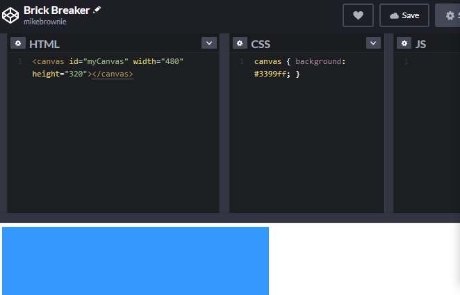

Today, we will set up our coding enviroment and embed code for Brick Breaker on codepen.io.
Lastly, we will begin to explore how it works.
After each section, check your work with a sensei!
3. The Skin: Add this code to the CSS section to color the background light gray
canvas { background: #eee; }
4. Now, you get to choose the color of the background for your game!
Click here to visit our color picker, and pick your favorite.
One you find it, copy (ctrl+c) the hex code.
Return to the CodePen page, and replace "(#eee)" with your new hex color value
Tip: You can highlight "#eee" with the cursor and press (ctrl+v) to quickly do this
Example Hex Code:
Hex code is used to represent colors in a way the computer understand
canvas { background: NEW_COLOR_HERE; }
5. Press (ctrl+s) to save and see your new background!

Make sure you see your color after saving!
6. The Motion: Now, add ALL of this JavaScript code to the Javascript section
////VARIABLES DECLARATIONS////
var score = 0;
var lives = 3;
var started = false;
var canvas = document.getElementById("game");
var ctx = canvas.getContext("2d");
//3.1 paddle variable declarations
//4.1 ball variable declarations
//5.1 Brick variable declarations
//5.2 Brick Creation
////END VARIABLE DECALARTIONS////
////EVENT LISTENERS////
//3.4.1 controller object declaration
//3.4.2 Adding keydown and key up listeners
//3.4.3 keyUp/DownHandler() definitions
////END EVENT LISTENERS////
////FUNCTION DEFINITIONS////
//3.5 movePaddle() definition
//3.2: drawPaddle() definition
//4.2 drawBall() definition
//4.3 moveBall() definition
//5.3 drawBricks() definition
//5.4 brickCollisionDetection() definition
//6.1 drawScore() definition
//6.2 drawLives() defintion
//update() function definition, called every frame, 60 times per second
function update() {
ctx.clearRect(0, 0, canvas.width, canvas.height);
//3.2 drawPaddle(); call
//4.2 drawBall() call
//5.3 drawBricks() call
requestAnimationFrame(update);
}
////END FUNCTION DEFINITIONS////
update();
6. We have built a canvas that we will draw on to create the game!
Make sure you save before moving on.
3. Making the Paddle
(15 Minutes)
1. Paddle variables
We will need to define some variables, like posistion and size of the paddle
Then, we will add Event Listeners to listen for keyboard input and modify the posistion of the paddle based on the input
First, lets define the size and posistion of the paddle
Add this code to section 3.1: paddle variable declarations
var paddleHeight = 10;
var paddleWidth = 120;
var paddleX = (canvas.width-paddleWidth)/2;
2. Drawing the paddle
Now that we have defined where the paddle is and how big it should be, we will draw it on the canvas
First, we will define a function that draws the paddle based on its size and x position
Add this function definition under 3.2: drawPaddle() definition
So far, we have only defined the function for drawing the paddle, but we haven't told the computer to execute it
By adding a function call inside of update, we can tell the computer to draw it each frame
Add this function call inside of update() near the bottom of the code, labeled 3.2 drawPaddle(); call
drawPaddle();
After hitting save and run, you should see a small blue rectange at the bottom of your canvas
4. Event Listeners
Now, we have a static paddle. We will now add event listeners to take keyboard input and after make it move!
First, lets create a controller object to hold the state of the keys. we only need to move the padde left or right, so we will have a true/false variable for leftkey pressed and right key presssed.
Add this code in the event listener section, 3.4.1 controller object declaration
var controller = {
rightPressed: false,
leftPressed: false,
};
Now, just below, add Event Listeners to the document under 3.4.2 Adding keydown and key up listeners
Now, you can change the speed of the paddle. Right now, it is set to 7 pixels per frame. After adding the call below, try different speeds
Let's put a call for this function inside of drawPaddle(), so that the paddle can be moved every frame
Add a call inside of draw paddle, under the comment labeled 3.5 movePaddle(); call
//3.5 movePaddle() call
movePaddle();
Test out your paddle and make sure it moves before starting section 4!
4. Making the ball
(15 Minutes)
1. Ball variables
Just like we did for the paddle, we will define some variables for the ball
Then, we will create a function for drawing the ball, and lastly moving the ball
We won't need event listeners as the user doesn't directly control the ball
Add these variable to the variable section of your code under ball variable declarations
//Size of ball
var ballRadius = 10;
//Ball posistion
var x = canvas.width/2;
var y = canvas.height-30;
//Ball speed
var dx = 5;
var dy = -5;
2. Drawing the ball
Now we can create a function for drawing the ball using the variables we just defined
Add this under 4.2, drawBall() definition
function drawBall() {
ctx.beginPath();
ctx.arc(x, y, ballRadius, 0, Math.PI*2);
ctx.fillStyle = "#0095DD";
ctx.fill();
ctx.closePath();
//4.4 moveBall(); call
}
Let's add a call for drawBall() inside of the update() function, so that it is called every frame
//4.2 drawBall(); call
drawBall();
Now, when you save and run, you should see a ball above your paddle
3. Making the ball move
There is more possibilities we need to cover for moving the ball
1. The ball hits the wall -> make it bounce back the other way
2. The ball hits the wall -> bounce back down
3. The ball hits paddle -> bounce back up
4. The ball hits the ground
4.1 Player has lives left -> reset the game and start again
4.2 No lives left -> end the game and alert player
This moveBall() function covers all these possibilities
Add the definition under 4.3 moveBall(); definition
function moveBall() {
//move the vall by its speed
x += dx;
y += dy;
//ball hits wall
if(x + dx > canvas.width-ballRadius || x + dx < ballRadius) {
dx = -dx;
}
//ball hits top
if(y + dy < ballRadius) {
dy = -dy;
}
//ball hits paddle
else if(y + dy > canvas.height-ballRadius) {
if(x > paddleX && x < paddleX + paddleWidth) {
dy = -dy;
}
else { //no lives left
lives--;
if(!lives) {
alert("GAME OVER");
document.location.reload();
}
else { //lives left, resetart
x = canvas.width/2;
y = canvas.height-30;
dx = 5;
dy = -5;
paddleX = (canvas.width-paddleWidth)/2;
}
}
}
}
Lastly, we need to add a call to moveBall() inside of drawBall() so that it's called each frame
Add this code inside of drawBall(), just under the moveBall() call
//4.3 moveBall(); call
moveBall();
Now, you should be able to see the ball moving, and control your paddle to keep it up. In the next section, we will add bricks and score!
5. Adding Bricks, drawing score and lives
(15 Minutes)
1. Brick variables
Once again, we will first define some variables
Then, we will create a function for drawing the bricks
Lastly, we will add a ballHitBrick() function to handle what happens when the ball hits a brick
Add these variable to the variable section of your code under 5.1 Brick variable declarations
//5.1 Brick variables
var brickRowCount = 9;
var brickColumnCount = 3;
var brickWidth = 75;
var brickHeight = 20;
var brickPadding = 10;
var brickOffsetTop = 30;
var brickOffsetLeft = 30;
var bricks = [];
2. Declaring brick objects
We will store the brick objects inside of an 2d-array
Add this under "5.2 brick creation" to initialize our array of bricks
 Common Errors
Common Errors More Information
More Information